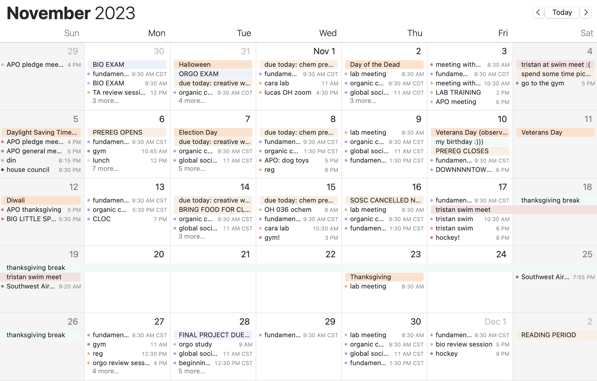

Okay with looking at my wall in May and seeing a calendar that still reads November.
Okay with the dizzying spiral.
Okay with the unyielding march towards nothingness.

Okay with calendars that have to change from November to December to May and back again, year in and year out.